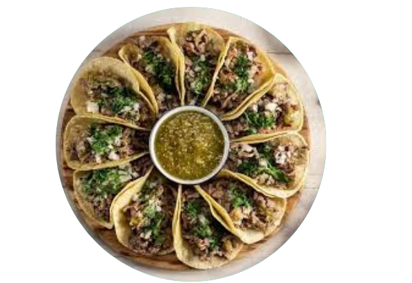
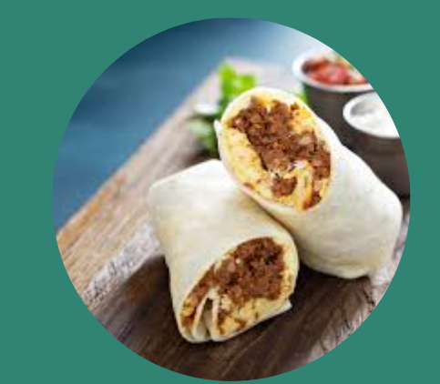
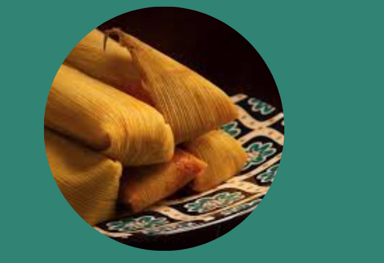
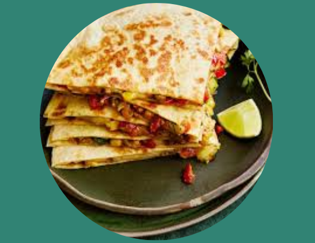
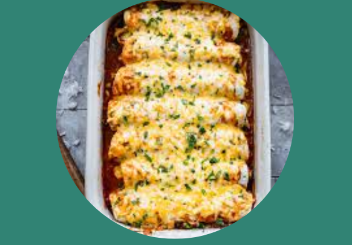
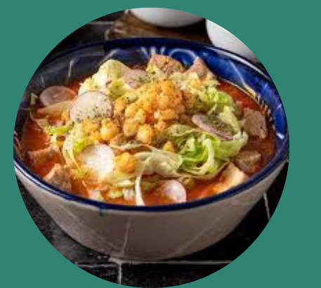
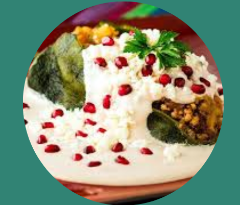
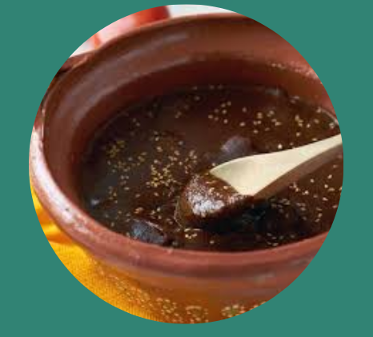
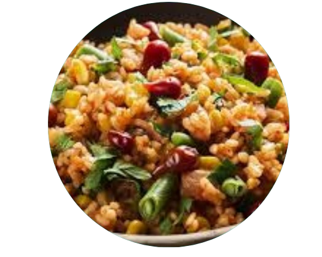

Culinária
A culinária mexicana é uma das mais ricas e saborosas do mundo, conhecida pela variedade de temperos, cores e ingredientes típicos. Ela mistura tradições indígenas com influências espanholas, resultando em pratos cheios de sabor e cultura. Entre os alimentos mais populares estão os tacos, burritos, enchiladas e o guacamole, feitos com ingredientes como milho, feijão, pimenta e abacate. A comida mexicana é tão importante que foi reconhecida como Patrimônio Cultural Imaterial da Humanidade pela UNESCO, sendo um símbolo de identidade e orgulho nacional.
Principais Pratos:
Tacos – Tortilhas de milho ou trigo recheadas com carne, frango, peixe ou vegetais.
Burritos – Tortilhas enroladas com feijão, arroz, carne e molho picante.
Tamales – Massa de milho recheada e cozida em folhas de milho ou bananeira.
Guacamole – Pasta de abacate com limão, tomate, cebola e pimenta.

Quesadillas – Tortilhas recheadas com queijo e outros ingredientes, grelhadas até derreter.
Enchiladas – Tortilhas recheadas e cobertas com molho picante e queijo.
Pozole – Sopa espessa feita com milho, carne (geralmente porco) e temperos.
Chiles en nogada – Pimentões recheados com carne e frutas, cobertos com molho de nozes e romã.
Mole poblano – Molho espesso feito com pimenta, especiarias e chocolate, servido com frango.
Arroz mexicano – Arroz colorido e temperado, servido como acompanhamento em várias refeições.
